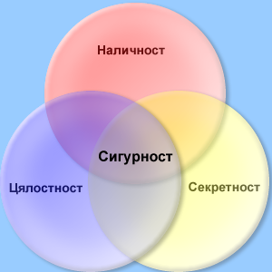

ТЕМА 1: Мрежова сигурност
Определяне на необходимата степен на сигурност
Определяне на заплахите за сигурността
В предишните раздели разгледахме хардуерните и софтуерните елементите, които са изградени компютърните мрежи. С развитието на технологиите се увеличава и броят на компютрите свързани в мрежа (или с връзка към Интернет). Предимствата на тази свързаност са очевидни, но в същото време, все по често на преден план заставт въпросите, касаещи защитата на информациятакато цяло и защитата на мрежата, в частност. Все по-често научаваме за прониквания в мрежи на правителствени и големи бизнес организации, сблъскваме се с атаки на компютърни вируси. Почвиха се даже термини като "компютърна измaма" и "компютърно престъпление". От администраторите на многонационални корпоративни мрежи до потребителите на домашни компютри, почти всеки, който е ”он-лайн”, е заинтересован до някаква степен от проследяването на възможността за неоторизиран достъп.
В процеса на развитие на защита на информацията се разработват и внедряват и редица международни стандарти. Възникват и работят редица организации, които да координират научните изследвания и разработки в областта на защита на информацията. В компютърната индустрия се създаде нов дял – Computer Security – Защита на информацията в компютъра.
Какво е сигурност? За различните хора сигурността означава различни неща. Единствената напълно сигурна система е тази, до която никой няма достъп. Очевидно тя е неработеща. Компютърната сигурност е дефинирана от Microsoft Press Computer and Internet Dictionary като „необходимите действия за защита на един компютър и информацията, която той съдържа". В глобалната мрежа по принцип комуникациите са отворени и неконтролирани. Тази идея за отвореност влиза в противоречие, в конфликт с изискването за конфиденциалност и цялост на транзакциите. Тези две изисквания могат да се реализират, ако бъде осигурена системна сигурност, добре конфигуриран софтуер и внимателно подбран персонал от специалисти. С други думи това е една двуцелева задача с критерии за оптималност "пари за сигурност" и "ниво на сигурност". Анонимността и деперсонализацията в Интернет пространството правят особено важен въпроса за идентификацията, избягването на неоторизиран достъп до данни и съхраняване целостта на информацията.
Сигурността на информацията е понятие, което може да се опише със следните три основни характеристики:
- Конфиденциалност или секретност (Secrecy or Confidentiality)- Най-общо това е контрола върху лицето или лицата ползващи дадена информация с цел да се избегне нейното разпространение.
- Цялостност (Integrity) и точност (Accuracy). Това означава информацията и софтуера да бъдат непрекъснато поддържани във времето, като се променят само от оторизирани лица, т.е. информацията е действителна (валидна), точна, автентична и не е променяна или изтривана при осъществяваните комуникации и ползване. Тази характеристика е особено важна за финансовите институции, но и не само за тях.
- Наличност: Всеки потребител има в реално време непрекъснат достъп до информацията и ресурсите, за които има съответната оторизация.
Изброените по-горе характеристики (компоненти на сигурността) имат различна тежест, различно значение в зависимост от спецификата на институцията, фирмата или учреждението. Естествено, когато става въпрос за националната сигурност, най-важен компонент е секретността. В банковото дело конфиденциалността също е важна, но там още по-важна е целостта, точността, валидността и автентичността на данните. При рекламата и осъществяването на стопански сделки най-важна от трите характеристики може би е наличността.
За да бъде удовлетворена нуждата от сигурност на конкретна мрежа е необходимо:
- Определяне на нуждите за сигурност
- Определяне на заплахите за сигурността
- Реализиране на мерки за сигурност, защита и възстановяване от сривове
Определяне на необходимата степен на сигурност
Степента на сигурност, която е небходимо да бъде постигната за дадена компютърна мрежа зависи до голяма степен от типа и сферата на действие на институцията, фирмата или учреждението,в рамките и за нуждите на която е изградена мрежата. Първата стъпка в разработването на осъществим план за защита на мрежата е определянето на нуждите от сигурност. Факторите, които трябва да бъдат оценени, са следните:
- Типът на бизнеса, в който участва компанията
- Типът на данните, съхранявани в мрежата
- Философията за управлението на организацията
Да разгледаме всеки един от тези фактори поотделно и да обсъдим защо той е важен:
- Тип на бизнеса
Някои типове бизнес, например юридическата сфера или медицината, поради самата си природа генерират поверителни данни. Частният характер на медицинските данни на пациента или комуникацията адвокат-клиент са защитени от закона. Ако във дадена мрежа се съхраняват конфиденциални документи, безапелационно трябва да бъде поддържано високо ниво на сигурност. Ако това не бъде направено, организацията се подлага на риска от гражданска отговорност и дори обвинения в криминално деяние.
И други типове организации често произвеждат поверителни данни:
- Агенциите на изпълнителната власт, съдилищата и други правителствени институции
- Образователни институции, които съхраняват данни за студенти/ученици в мрежа
- Болници, психиатрични заведения и заведения за временно лишаване от свобода
- Компании, чиято дейност е свързана с националната сигурност.
- Организации, които събират данни срещу гаранция за конфиденциалност
- Организации, които произвеждат продукт или предоставя услуга в областта на индустрията с висока конкурентност, или правят научни изследвания в такава област
- Тип на данните
Независимо от типа на бизнеса, определени типове данни се считат за частни и трябва да бъдат защитени. Тези типове са следните:
- Заплатите и персоналната информация на служителите
- Счетоводната и данъчната информация
- Търговски тайни, като оригинален код, планове и диаграми, рецепти и бизнес стратегии
Ако в една мрежа се съхраняват такива типове информация, трябва да бъде реализиран план за сигурност, за да бъдат защитени данните.
- Философия на управление
Ако данните в мрежата не са от частен характер, нивото на сигурност може да зависи от персоналната философия на собствениците или мениджърите на бизнес организацията, като се вземе предвид колко отворена (или затворена) искат да бъде мрежата.
В някои организации достъпността и лекотата на използване се радват на по-голяма популярност, отколкото конфиденциалността и сигурността. Други организации предпочитат информацията да бъде достъпна само за този, чиято работа я изисква. Нито една от двете политики не е нито напълно правилна, нито напълно погрешна. Мрежовите администратори просто трябва да познават и реализират сигурността на мрежата съобразно стила на управление на организацията.
След като е взето решението, че типът, данните и философията на управление на организацията или фирмата изискват реализиране на мерки за сигурност, трябва да определим вероятните източници на заплаха за целостта на данни в съответната мрежа.
Организациите могат лесно да подценят, надценят или напълно да пренебрегнат рисковете, на които са изложени техните мрежи. Въпреки това има много и различни типове заплахи за сигурността на мрежата. Най-общо те могат да бъдат класифицирани в следните две най-общи категории:
- Външни заплахи
- Вътрешни заплахи
- Външни заплахи
Преди време външните заплахи не бяха сериозен проблем за локалните мрежи на повечето организации. Най-общо мрежата беше самостоятелна, и за да може даден нарушител да проникне отвън, той или тя трябваше да набере модем някъде в мрежата или до се закачи към кабела. Сега, когато повечето LAN мрежи са свързани към Интернет, всичко това е променено. Когато една мрежа може да осъществява достъп до външния свят, външните хора също имат достъп до нея.
Мотивите на външните нарушители са различни. Най-често срещаните мотиви са отмъщение (недоволни клиенти, вечно обидени бивши служители и сърдити конкуренти), развлечение (такива, които се „хакват" в мрежите „просто за забавление", или за да докажат своите технически умения) и срещу заплащане. В последния случай на нарушителя е заплатено да нахлуе в мрежата, или той прави това за лична изгода.
Външните пробиви в сигурността могат да приемат множество форми, в това число:
- Неоторизирано използване на пароли и ключове
- Атаки от типа Denial of Service (DоS)
- IP спуфинг
- Компютърни вируси и червеи
- Програми тип троянски коне
По подробно тези тези методи на проникване са рагледани в тема 2 от този раздел.
- Вътрешни заплахи
Често мерките за сигурност в дадена мрежата се фокусират само върху Интернет и външните заплахи. Това обикновено е грешка. Мрежовите администратори не трябва да пренебрегват риска от вътрешни пробиви на сигурността. Много случаи на кражба, злоупотреба или унищожаване на данни са "вътрешна работа".
Съществуват няколко мотива за вътрешни пробиви на сигурността, а именно:
- Корпоративен шпионаж Корпоративният шпионаж е най-интелигентният тип вътрешна заплаха за сигурността. Когато даден бизнес е част от сфера, в която корпоративният шпионаж е разпространено явление (такива са всички сфери, в които успехът зависи от това да бъдеш първи на пазара с иновационни продукти или услуги), неговата мрежа може да стане цел на подобни атаки.Мерките за сигурност за осуетяване на шпионаж трябва да бъдат от най-високо ниво, което нах-често налага привличането на консултанти, които са специалисти в защитата на корпоративни мрежи от такива намеси.
- Вътрешни политики. Друг вътрешен риск представлява служител, който може да се опита да осъществява достъп и да саботира работата на тези, в които вижда като свои лични конкуренти.
Особено деструктивен тип заплаха за сигурността представлява служителят или бившият служител, който има зъб на организацията и иска да й навреди. Тези хора могат да унищожат критично важни данни или да разрушат жизненоважни мрежови комуникации "просто за забавление" или поради криворазбрано усещане за "справедливост".
Политиката на сигурност трябва да решава този проблем. Практика показва, че потребителските акаунти на уволнени служители трябва незабавно да бъдат изтривани, а в някои случаи да бъде прекратен и техния физически достъп до компютрите на компанията.
- Случайни пробиви В много случаи вътрешните пробиви на сигурността не са преднамерени действия, а са причинени от техническото невежество или липса на подготовка на част от служителите. Мрежовите администратори познават добре потребители, които унищожават файлове на операционната система, докато се опитват да "оправят" дребен проблем, или решават да "освободят малко дисково пространство", като изтрият всички файлове на дадена приложна програма.
Случайните пробиви са основателна причина в света на бизнеса да са предпочитани за използване операционни системи със силни възможности за сигурност. Чрез реализиране на позволения на ниво файл с помощта на възможността System Policies на Windows NT или възможността Group Policies на Windows 2000, потребителите могат да бъдат възпрепятствани да изтриват или да преместват критично важни системни файлове.
- Непокорни потребители. Вътрешните пробиви на сигурността могат да бъдат резултат също от потребители, които не са съгласни с политиките на сигурност, намирайки ги за прекалено ограничаващи. Макар че не са "случайни", тези пробиви не са предназначени да предизвикват вреда; вместо това те имат за цел да разрешат на потребителя да прави нещо, което в противен случай не може да прави. Например ако настройките на сигурността не забраняват инсталирането на приложен софтуер, непокорният потребител може да инсталира приложение за отдалечен достъп, като PCAnywhere, което може да отвори този компютър - и вътрешната мрежа — за външните потребители, които също са си инсталирали софтуера PCAnywhere на техните компютри.
Oтветни действия срещу непокорните потребители ще зависят от политиките на организацията и от степента на сигурност, наложена в мрежата. Може да бъде уместно да се реализират по-строги правила за контрол. В други случаи може да бъде по-подходящо да се прецени дали приетите политики за сигурност реално не са излишно строги и дали не трябва да се разширят определени права на някои потребители.